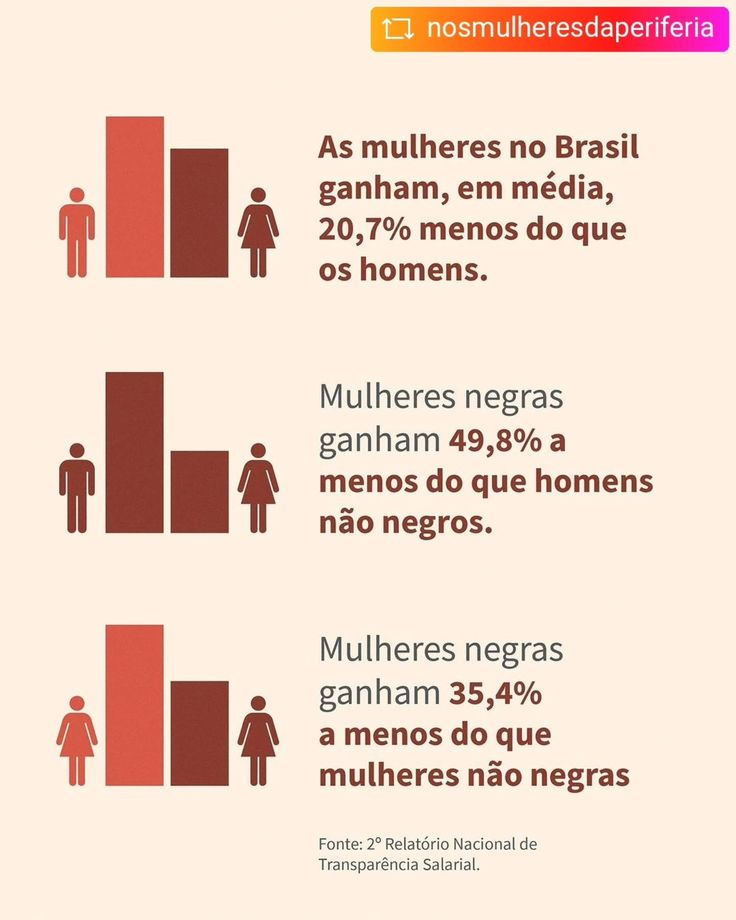

A imagem sobre a diferença salarial entre pessoas negras e brancas, revela uma realidade marcada por desigualdades profundas no mercado de trabalho. Ela mostra que, mesmo desempenhando funções semelhantes, as pessoas não recebem salários iguais, e essa diferença é ainda mais evidente quando se consideram fatores como gênero e raça. De forma geral, homens brancos aparecem no topo da escala salarial, recebendo os maiores rendimentos. Em seguida, vêm as mulheres brancas, que já enfrentam uma diferença significativa em relação aos homens. A situação se agrava quando analisamos pessoas negras: homens negros recebem menos que homens brancos e, muitas vezes, menos também que mulheres brancas. No nível mais baixo da escala estão as mulheres negras, que sofrem com a combinação do racismo e do machismo, resultando nos menores salários entre todos os grupos. Essa desigualdade evidencia que o mercado de trabalho não é neutro. Ele reflete desigualdades históricas e sociais que ainda persistem, como o preconceito racial e a discriminação de gênero. A imagem, portanto, não mostra apenas números, mas sim uma realidade que afeta diretamente as oportunidades, a qualidade de vida e o reconhecimento profissional dessas pessoas. Dessa forma, o conteúdo da imagem nos convida a refletir sobre a necessidade de políticas públicas, educação e mudanças culturais que promovam mais equidade. Reduzir essas diferenças é fundamental para construir uma sociedade mais justa, onde o trabalho seja valorizado de maneira igual, independentemente de quem o realiza.